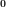
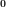
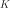
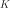

KarhunenLoeveResult¶
-
class
KarhunenLoeveResult(*args)¶ Result structure of a Karhunen Loeve algorithm.
- Available constructors:
KarhunenLoeveResult(implementation)
KarhunenLoeveResult(covModel, s, lambda, modes, modesAsProcessSample, projection)
- Parameters
- implementation
KarhunenLoeveResultImplementation A specific implementation.
- covModel
CovarianceModel The covariance model.
- sfloat,

The threshold used to select the most significant eigenmodes, defined in
KarhunenLoeveAlgorithm.- lambda
Point The first eigenvalues of the Fredholm problem.
- modes
Basis The first modes of the Fredholm problem.
- modesAsProcessSample
ProcessSample The values of the modes on the mesh associated to the KarhunenLoeve algorithm.
- projection
Matrix The projection matrix.
- implementation
Notes
Structure generally created by the method run() of a
KarhunenLoeveAlgorithmand obtained thanks to the method getResult().We consider a covariance function defined on
 , continuous at .
, continuous at .We note the solutions of the Fredholm problem associated to
 where K is the highest index  such that .
where K is the highest index  such that .We note
 the eigenvalues sequence and the eigenfunctions sequence.
the eigenvalues sequence and the eigenfunctions sequence.Then we define the linear projection function by:
(1)¶
where .
According to the Karhunen Loeve algorithm, the integral of (1) is replaced by a specific weighted and finite sum. Thus, the linear relation (1) becomes a relation between fields which allows the following matrix representation:
(2)¶
where
 is a
is a Fieldand the projection matrix.
the projection matrix.The inverse of
 is the lift function defined by:
is the lift function defined by:(3)¶
If the function where
 is the centered process which covariance function is associated to the eigenvalues and eigenfunctions , then the getEigenValues method enables to obtain the first eigenvalues of the Karhunen Loeve decomposition of and the method getModes enables to get the associated modes.
is the centered process which covariance function is associated to the eigenvalues and eigenfunctions , then the getEigenValues method enables to obtain the first eigenvalues of the Karhunen Loeve decomposition of and the method getModes enables to get the associated modes.Examples
>>> import openturns as ot >>> N = 256 >>> mesh = ot.IntervalMesher([N - 1]).build(ot.Interval(-1, 1)) >>> covariance_X = ot.AbsoluteExponential([1]) >>> process_X = ot.GaussianProcess(covariance_X, mesh) >>> s = 0.001 >>> algo_X = ot.KarhunenLoeveP1Algorithm(mesh, covariance_X, s) >>> algo_X.run() >>> result_X = algo_X.getResult()
- Attributes
thisownThe membership flag
Methods
Accessor to the object’s name.
Accessor to the covariance model.
Accessor to the eigenvalues of the Karhunen Loeve decomposition.
getId()Accessor to the object’s id.
getImplementation(*args)Accessor to the underlying implementation.
getMesh()Accessor to the mesh.
getModes()Get the modes as functions.
Accessor to the modes as a process sample.
getName()Accessor to the object’s name.
Accessor to the projection matrix.
Get the modes as functions scaled by the square-root of the corresponding eigenvalue.
Accessor to the scaled modes as a process sample.
Accessor to the limit ratio on eigenvalues.
lift(coefficients)Lift the coefficients into a function.
liftAsField(coefficients)Lift the coefficients into a field.
liftAsSample(coefficients)Lift the coefficients into a sample.
project(*args)Project a function or a field on the eigenmodes basis.
setName(name)Accessor to the object’s name.
-
getClassName()¶ Accessor to the object’s name.
- Returns
- class_namestr
The object class name (object.__class__.__name__).
-
getCovarianceModel()¶ Accessor to the covariance model.
- Returns
- covModel
CovarianceModel The covariance model.
- covModel
-
getEigenValues()¶ Accessor to the eigenvalues of the Karhunen Loeve decomposition.
- Returns
- eigenVal
Point The most significant eigenvalues.
- eigenVal
Notes
OpenTURNS truncates the sequence
 to the most significant terms, selected by the threshold defined in
to the most significant terms, selected by the threshold defined in KarhunenLoeveAlgorithm.
-
getId()¶ Accessor to the object’s id.
- Returns
- idint
Internal unique identifier.
-
getImplementation(*args)¶ Accessor to the underlying implementation.
- Returns
- implImplementation
The implementation class.
-
getMesh()¶ Accessor to the mesh.
-
getModes()¶ Get the modes as functions.
- Returns
- modescollection of
Function The truncated basis .
- modescollection of
Notes
The basis is truncated to where is determined by the
 , defined in
, defined in KarhunenLoeveAlgorithm.
-
getModesAsProcessSample()¶ Accessor to the modes as a process sample.
- Returns
- modesAsProcessSample
ProcessSample The values of each mode on a mesh whose vertices were used to discretize the Fredholm equation.
- modesAsProcessSample
Notes
The modes are evaluated on the vertices of the mesh defining the process sample. The values of the i-th field are the values of the i-th mode on these vertices.
The mesh corresponds to the discretization points of the integral in (1).
-
getName()¶ Accessor to the object’s name.
- Returns
- namestr
The name of the object.
-
getProjectionMatrix()¶ Accessor to the projection matrix.
-
getScaledModes()¶ Get the modes as functions scaled by the square-root of the corresponding eigenvalue.
- Returns
- modescollection of
Function The truncated basis .
- modescollection of
Notes
The basis is truncated to where is determined by the
, defined in KarhunenLoeveAlgorithm.
-
getScaledModesAsProcessSample()¶ Accessor to the scaled modes as a process sample.
- Returns
- modesAsProcessSample
ProcessSample The values of each scaled mode on a mesh whose vertices were used to discretize the Fredholm equation.
- modesAsProcessSample
Notes
The modes are evaluated on the vertices of the mesh defining the process sample. The values of the i-th field are the values of the i-th mode on these vertices.
- The mesh corresponds to the discretization points used to discretize the integral
(1).
-
getThreshold()¶ Accessor to the limit ratio on eigenvalues.
- Returns
- sfloat,
The threshold
used to select the most significant eigenmodes, defined in KarhunenLoeveAlgorithm.
-
lift(coefficients)¶ Lift the coefficients into a function.
Notes
The sum defining
 is truncated to the first terms, where is determined by the , defined in
is truncated to the first terms, where is determined by the , defined in KarhunenLoeveAlgorithm.
-
liftAsField(coefficients)¶ Lift the coefficients into a field.
- Parameters
- coef
Point The coefficients .
- coef
- Returns
Notes
The sum defining
is truncated to the first terms, where is determined by the , defined in KarhunenLoeveAlgorithm.
-
liftAsSample(coefficients)¶ Lift the coefficients into a sample.
- Parameters
- coef
Point The coefficients .
- coef
- Returns
Notes
The sum defining
is truncated to the first terms, where is determined by the , defined in KarhunenLoeveAlgorithm.
-
project(*args)¶ Project a function or a field on the eigenmodes basis.
- Available constructors:
project(function)
project(functions)
project(values)
project(fieldSample)
- Parameters
- function
Function A function.
- functionslist of
Function A list of functions.
- values
Sample Field values.
- fieldSample
ProcessSample A collection of fields.
- function
- Returns
Notes
The project method calculates the projection (1) on a function or a field where only the first elements of the sequences are calculated. is determined by the
, defined in KarhunenLoeveAlgorithm.Lets note the mesh coming from the
KarhunenLoeveResult(ie the one contained in the modesAsSampleProcessSample).The given values are defined on the input field and the associated values are directly used for the projection.
If evaluated from a function, the project method evaluates the function on and uses (2).
-
setName(name)¶ Accessor to the object’s name.
- Parameters
- namestr
The name of the object.
 of the components of the function or the field in the eigenmodes basis
of the components of the function or the field in the eigenmodes basis